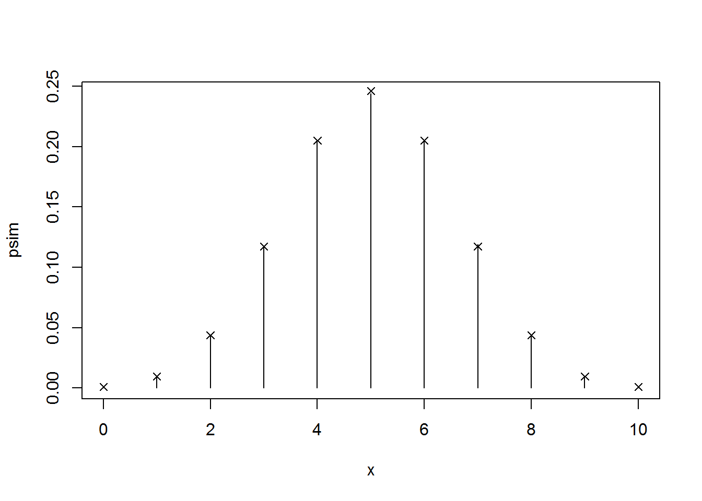
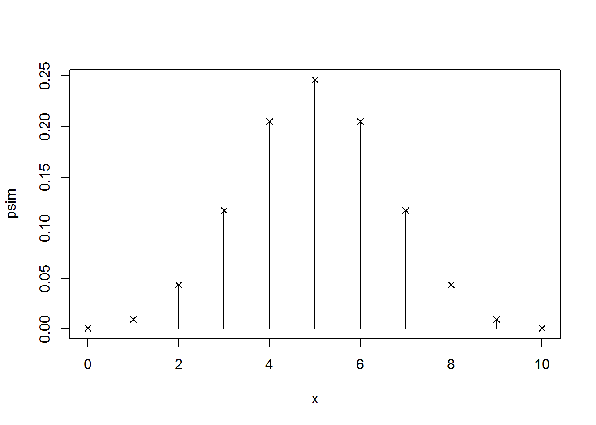
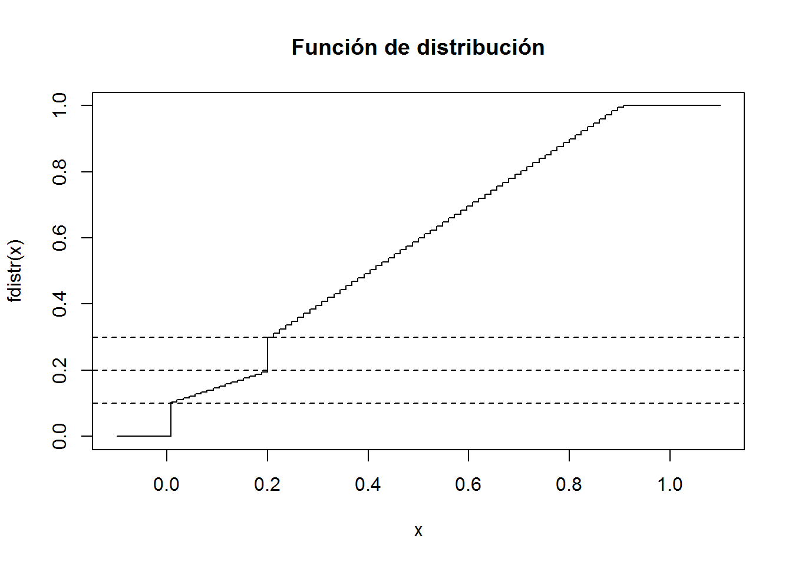
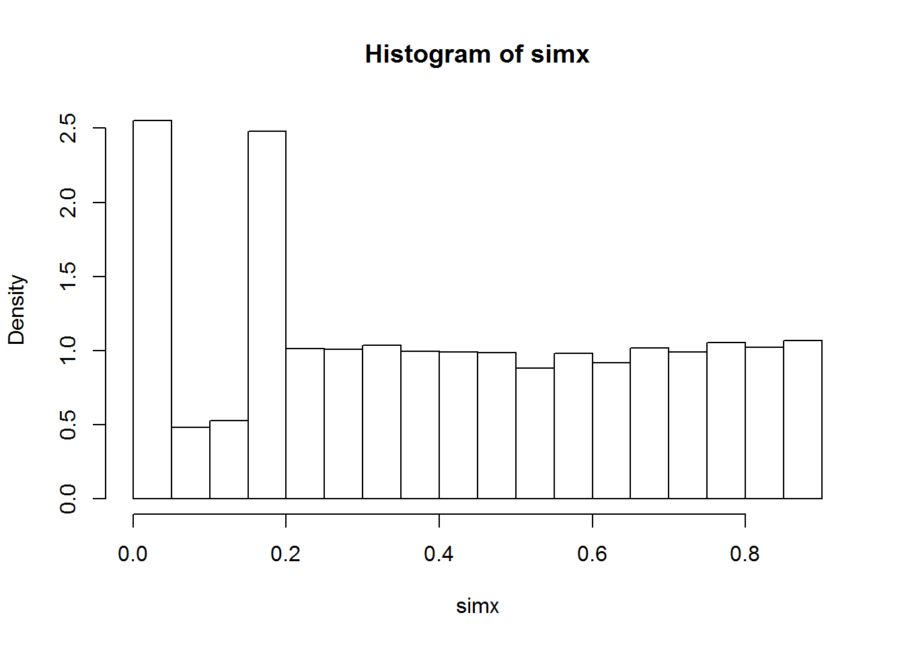
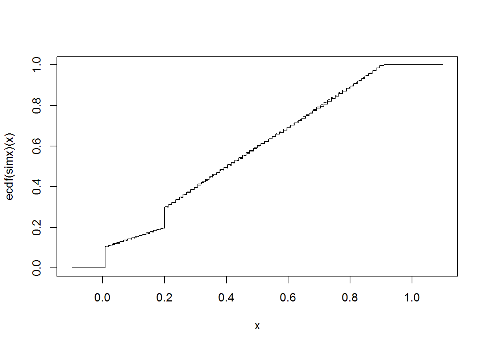

Capítulo 8 Simulación de variables discretas
Pendiente: ejemplos y teoría
8.1 Ejercicios
Se pretende simular valores de una distribución \(\mathcal{B}(10,0.5)\). Para ello:
- Generar, por el método de la transformación cuantil usando búsqueda secuencial, una muestra de \(nsim=10^{5}\) observaciones de esta variable. Obtener el tiempo de CPU empleado. Aproximar por simulación la función de masa de probabilidad, representarla gráficamente y compararla con la teórica. Calcular también la media muestral (compararla con la teórica \(np\)) y el número medio de comparaciones para generar cada observación.
rfmp <- function(x, prob = 1/length(x), nsim = 1000) {
# Simulación nsim v.a. discreta a partir de fmp
# por inversión generalizada (transformación cuantil)
# Inicializar FD
Fx <- cumsum(prob)
# Simular
X <- numeric(nsim)
U <- runif(nsim)
for(j in 1:nsim) {
i <- 1
while (Fx[i] < U[j]) i <- i + 1
X[j] <- x[i]
ncomp <<- ncomp + i
}
return(X)
}
# Simular binomial
set.seed(54321)
n <- 10
p <- 0.5
nsim <- 10^5
x <- 0:n
fmp <- dbinom(x, n, p)
ncomp <- 0
system.time( rx <- rfmp(x, fmp, nsim) )## user system elapsed
## 0.07 0.03 0.10# Aproximación media
mean(rx)## [1] 5.00322n*p## [1] 5# Número de comparaciones
ncomp/nsim## [1] 6.00322sum((1:length(x))*fmp) # Valor teórico## [1] 6# Análisis resultados
res <- as.data.frame(table(rx)/nsim)
names(res) <- c("x", "psim")
# Comparación teórica
plot(as.matrix(res), type="h")
points(x, fmp, pch=4)
res$pteor <- fmp
res## x psim pteor
## 1 0 0.00107 0.0009765625
## 2 1 0.00990 0.0097656250
## 3 2 0.04432 0.0439453125
## 4 3 0.11778 0.1171875000
## 5 4 0.20425 0.2050781250
## 6 5 0.24375 0.2460937500
## 7 6 0.20454 0.2050781250
## 8 7 0.11898 0.1171875000
## 9 8 0.04419 0.0439453125
## 10 9 0.01023 0.0097656250
## 11 10 0.00099 0.0009765625# Errores
max(abs(res$psim - res$pteor))## [1] 0.00234375max(abs(res$psim - res$pteor) / res$pteor)## [1] 0.09568# NOTA: Puede ocurrir que no todos los valores sean generados en la simulación
# Si length(x) > length(psim) el código anterior (res$pteor <- fmp) producirá un error
# Alternativamente:
res <- data.frame(x = x, pteor = fmp, psim = 0)
res.sim <- table(rx)/nsim
index <- match(names(res.sim), x)
res$psim[index] <- res.sim
# entre muchas otras posibilidades...- Repetir el apartado anterior ordenando previamente las probabilidades en orden decreciente y también empleando la función
samplede R.
tini <- proc.time()
ncomp <- 0
ind <- order(fmp, decreasing=TRUE)
rx <- rfmp(x[ind], fmp[ind], nsim)
tiempo <- proc.time() - tini
tiempo## user system elapsed
## 0.05 0.01 0.05# Número de comparaciones
ncomp/nsim## [1] 3.08969sum((1:length(x))*fmp[ind]) # Valor teórico## [1] 3.083984Como se comentó en el Capítulo de Números aleatorios en R en R se recomienda emplear la función sample (implementa eficientemente el método de Alias, descrito en el apartado d)): sample(x, size, replace = FALSE, prob = NULL).
system.time( rx <- sample(x, nsim, replace = TRUE, prob = fmp) )## user system elapsed
## 0 0 0# Si n >> 30
# Aproximación normal con corrección continuidad
mean <- n*p
sd <- sqrt(n*p*(1-p))
# curve(dnorm(x, mean, sd), add = TRUE, col='blue')
res$pnorm <- pnorm(x+0.5,mean,sd)-pnorm(x-0.5,mean,sd)
res## x pteor psim pnorm
## 1 0 0.0009765625 0.00107 0.001961154
## 2 1 0.0097656250 0.00990 0.011215085
## 3 2 0.0439453125 0.04432 0.043494801
## 4 3 0.1171875000 0.11778 0.114467707
## 5 4 0.2050781250 0.20425 0.204523961
## 6 5 0.2460937500 0.24375 0.248170366
## 7 6 0.2050781250 0.20454 0.204523961
## 8 7 0.1171875000 0.11898 0.114467707
## 9 8 0.0439453125 0.04419 0.043494801
## 10 9 0.0097656250 0.01023 0.011215085
## 11 10 0.0009765625 0.00099 0.001961154max(abs(res$pnorm - res$pteor))## [1] 0.002719793max(abs(res$pnorm - res$pteor) / res$pteor)## [1] 1.008222system.time( rx <- pmax(0, pmin(n, round( rnorm(nsim, mean, sd) ))) )## user system elapsed
## 0.02 0.00 0.02table(rx)/nsim## rx
## 0 1 2 3 4 5 6 7 8
## 0.00216 0.01107 0.04317 0.11406 0.20454 0.24924 0.20373 0.11500 0.04352
## 9 10
## 0.01121 0.00230# Realmente las prob de los extremos serían mayores...
res$pnorm[1] <- pnorm(0.5, mean, sd)
res$pnorm[n+1] <- 1 - pnorm(n-0.5, mean, sd)- Diseñar una rutina que permita generar \(nsim\) valores de una distribución discreta usando una tabla guía. Repetir los pasos de los apartados anteriores empleando esta rutina (con \(m=n-1\)).
rfmp.tabla <- function(x, prob = 1/length(x), m, nsim = 1000) {
# Simulación v.a. discreta a partir de función de masa de probabilidad
# por tabla guia de tamaño m
# Inicializar tabla y FD
Fx <- cumsum(prob)
g <- rep(1,m)
i <- 1
for(j in 2:m) {
while (Fx[i] < (j-1)/m) i <- i+1
g[j] <- i
}
# Generar valores
X <- numeric(nsim)
U <- runif(nsim)
for(j in 1:nsim) {
i <- g[floor(U[j]*m)+1]
while (Fx[i] < U[j]) i <- i + 1
X[j] <- x[i]
}
return(X)
}
system.time( rx <- rfmp.tabla(x, fmp, n-1, nsim) )## user system elapsed
## 0.06 0.01 0.07# Análisis resultados
res <- as.data.frame(table(rx)/nsim)
names(res) <- c("x", "psim")
# Comparación teórica
plot(as.matrix(res), type="h")
points(x, fmp, pch=4)- Diseñar una rutina que permita generar \(nsim\) valores de una distribución discreta usando el método de Alias. Repetir los pasos de los apartados anteriores empleando esta rutina. Comparar los resultados obtenidos.
rfmp.alias <- function(x, prob = 1/length(x), nsim = 1000) {
# Inicializar tablas
a <- numeric(length(x))
q <- prob*length(x)
low <- q < 1
high <- which(!low)
low <- which(low)
while (length(high) && length(low)) {
l <- low[1]
h <- high[1]
a[l] <- h
q[h] <- q[h] - (1 - q[l])
if (q[h] < 1) {
high <- high[-1]
low[1] <- h
} else low <- low[-1]
} # while
# Generar valores
V <- runif(nsim)
i <- floor(runif(nsim)*length(x)) + 1
return( x[ ifelse( V < q[i], i, a[i]) ] )
}
system.time( rx <- rfmp.alias(x,fmp,nsim) )## user system elapsed
## 0.04 0.04 0.05# Análisis resultados
res <- as.data.frame(table(rx)/nsim)
names(res) <- c("x", "psim")
# Comparación teórica
plot(as.matrix(res), type="h")
points(x, fmp, pch=4)
Considera la variable aleatoria con función de distribución dada por: \[F(x)=\left\{ \begin{array} [c]{cl}0 & \mbox{si $x<0$}\\ \frac{x}{2}+\frac{1}{10} & \mbox{si $x\in[0,\frac{1}{5})$}\\ x+\frac{1}{10} & \mbox{si $x\in[\frac{1}{5},\frac{9}{10}]$}\\ 1 & \mbox{en otro caso} \end{array} \right.\]
Función de distribución:
fdistr <- function(x) {
ifelse(x < 0, 0,
ifelse(x < 1/5, x/2 + 1/10,
ifelse(x <= 9/10, x + 1/10, 1) ) )
}
# Empleando ifelse se complica un poco más pero el resultado es una función vectorial.
curve(fdistr(x), from = -0.1, to = 1.1, type = 's',
main = 'Función de distribución')
# Discontinuidades en 0 y 1/5
abline(h = c(1/10, 2/10, 3/10), lty = 2) 
- Diseña un algoritmo basándote en el método de inversión generalizado para generar observaciones de esta variable.
El algoritmo general es siempre el mismo. Empleando la función cuantil: \[Q\left( u\right) = \inf \left\{ x\in \mathbb{R}:F\left( x\right) \geq u\right\},\] el algoritmo sería:
Generar \(U\sim \mathcal{U}\left( 0,1\right)\)
Devolver \(X=Q\left( U\right)\)
En este caso concreto:
Generar \(U\sim \mathcal{U}\left( 0,1\right)\)
Si \(U < \frac{1}{10}\) devolver \(X = 0\)
Si \(U < \frac{2}{10}\) devolver \(X = 2(U - \frac{1}{10})\)
Si \(U < \frac{3}{10}\) devolver \(X = \frac{2}{10}\)
En caso contrario devolver \(X = U - \frac{1}{10}\)
- Implementa el algoritmo en una función que permita generar \(nsim\) valores de la variable.
# Función cuantil:
fquant <- function(u) {
ifelse(u < 1/10, 0,
ifelse(u < 2/10, 2*(u - 1/10),
ifelse(u < 3/10, 2/10, u - 1/10) ) )
}
# Función para generar nsim valores:
rx <- function(nsim) fquant(runif(nsim))Ejemplo:
set.seed(1)
nsim <- 10^4
system.time(simx <- rx(nsim))## user system elapsed
## 0 0 0hist(simx, breaks = "FD", freq = FALSE)
En este caso como no es una variable absolutamente continua mejor emplear la función de distribución para compararla con la teórica:
curve(ecdf(simx)(x), from= -0.1, to = 1.1, type = "s")
curve(fdistr(x), type = "s", lty = 2, add = TRUE)
Se pretende simular \(nsim=10^{4}\) observaciones de una variable hipergeométrica (dhyper(x, m, n, k)) de parámetros \(m=\) el nº de grupo multiplicado por 10, \(n=100-m\) y \(k=20\)
Comprobar que el rango de posibles valores de esta variable es
max(0, k-n):min(m, k). Generar los valores empleando el método de la transformación cuantil usando búsqueda secuencial. Obtener el tiempo de CPU empleado. Aproximar por simulación la función de masa de probabilidad, representarla gráficamente y compararla con la teórica. Calcular también la media muestral (compararla con la teórica \(km/(m+n)\)) y el número medio de comparaciones para generar cada observación.Repetir el apartado anterior ordenando previamente las probabilidades en orden decreciente y también: empleando la función
samplede R, mediante una tabla guía (con \(k-1\) subintervalos) y usando el método de Alias.
8.2 Métodos específicos para generación de distribuciones notables
Pendiente: algunos ejemplos del libro de Ricardo y de las funciones implementadas en R